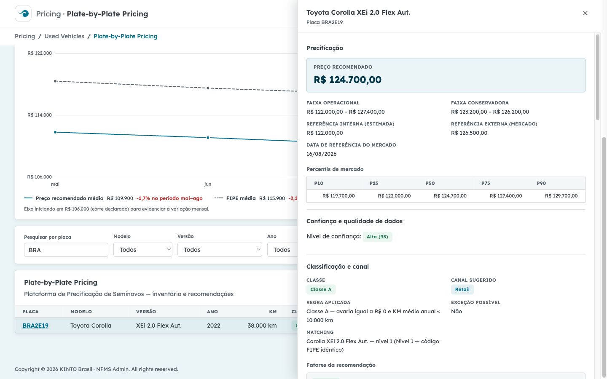
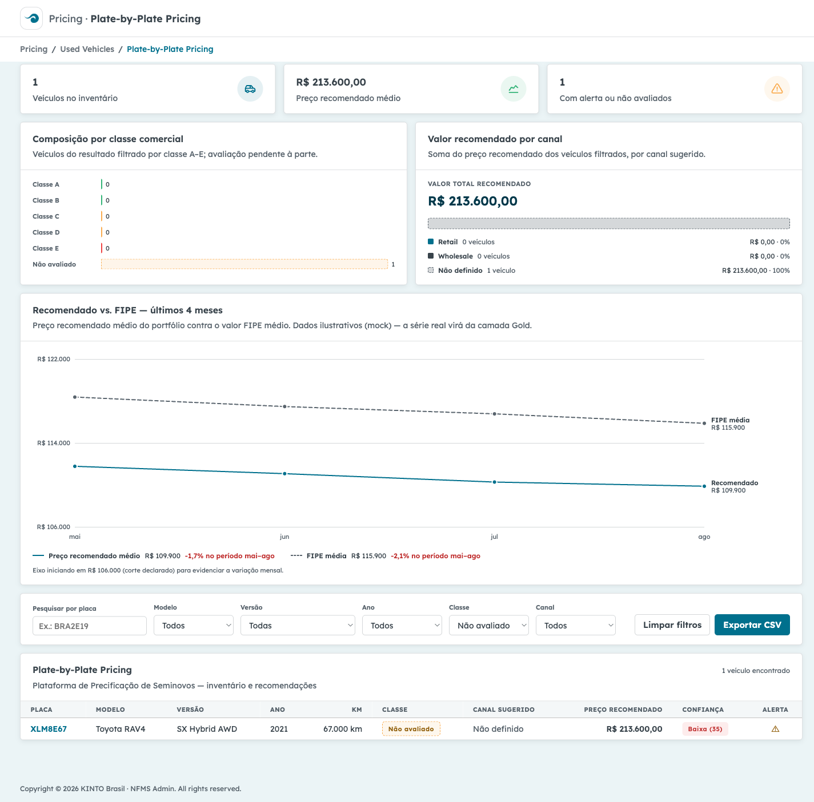
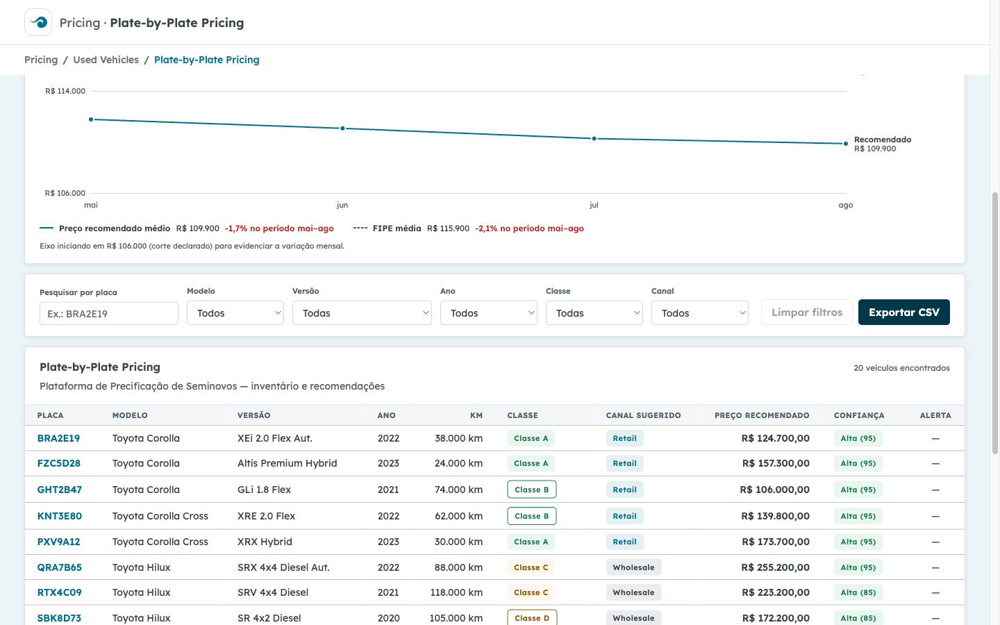

Executadas em Chromium headed com câmera lenta (3 s por ação) para acompanhamento visual. Suíte em e2e/tests/jornadas.spec.ts; cada teste é independente e somente leitura (aplicação sem mutação de estado — nada a preparar ou limpar).
| Jornada | O que foi verificado | Resultado |
|---|---|---|
| A — Visão executiva | Carga do painel; 3 KPIs (veículos no inventário, preço recomendado médio, com alerta/não avaliados); gráficos executivos por classe e por canal; gráfico "Recomendado vs. FIPE — últimos 4 meses"; tabela de inventário populada. Console sem erros. | PASSOU |
| B — Busca e detalhe | Busca por placa parcial "BRA" (RF-F6-A-02); abertura do offcanvas do veículo BRA2E19 com seções Precificação, Percentis de mercado (faixas), Comparáveis, Classificação e canal e Histórico; fechamento do painel. Console sem erros. | PASSOU |
| C — Classe "Não avaliado" | Filtro de classe NAO_AVALIADO; veículo XLM8E67 (avaria nula) exibido como "Não avaliado" e nunca como Classe A — regra da spec "avaria nula não é zero" respeitada na UI e na API. Console sem erros. |
PASSOU |
| D — Exportação CSV | Download inventario-precificacao-2026-08-20.csv com cabeçalho, separador ";" e dados do inventário filtrado (RF-F6-A-10). Console sem erros. |
PASSOU |
Suíte em e2e/tests/seguranca.spec.ts (8 testes, todos executados). Resultados reais observados:
| Checagem | Resultado | Evidência resumida |
|---|---|---|
| XSS nos inputs do painel (busca por placa) | SEM FALHA | Payloads <script>, "><img onerror> e quebra de aspas digitados na busca: nada executou (sem alert, sem window.__xss), nenhum nó injetado no DOM. React escapa a saída; conteúdo aparece apenas como texto no estado vazio. |
| Validação de entrada da API (query params malformados e payloads de injeção) | SEM FALHA | placa com payload XSS (>7 chars), ano=DROP TABLE…, classe=A' OR '1'='1, page=-1, page_size=99999 → todos 400 com envelope padronizado {"error":{code,message,details}} (padrão api-land). Sem stack trace, sem caminhos de arquivo, sem detalhes internos. |
| Path traversal na rota de placa | SEM FALHA | /api/inventario/..%2F..%2Fetc%2Fpasswd e variantes → 404/400 no envelope padrão; nenhum conteúdo de arquivo ou vazamento. |
| Recurso inexistente | SEM FALHA | GET /api/inventario/ZZZ9Z99 → 404 com error.code/error.message, sem detalhe interno. |
| Contrato de resposta sem campos inesperados/sensíveis | SEM FALHA | Chaves do inventário conferidas campo a campo contra o contrato esperado; nenhum campo extra ou sensível na resposta. |
| CORS restrito à origem do painel | SEM FALHA | Origem http://localhost:5173 → permitida; origem maliciosa → sem Access-Control-Allow-Origin (inclusive no preflight OPTIONS). Allowlist explícita em backend/app/main.py. |
| Console do navegador nas 4 jornadas | SEM FALHA | Nenhum erro de console ou pageerror; nenhum dado sensível logado. |
| Cabeçalhos de segurança (dev server) | INFORMATIVO | Vite e API sem CSP, X-Content-Type-Options, X-Frame-Options, HSTS ou Referrer-Policy; API expõe Server: uvicorn. Sem X-Powered-By em ambos. Servidor de desenvolvimento não representa produção — ver achados I-1/I-2. |
Dependências do frontend — npm audit --omit=dev |
0 VULNS | Dependências de produção (react 19.2.8, react-dom 19.2.8): 0 vulnerabilidades conhecidas. |
Dependências do backend — pip-audit sobre requirements.txt |
10 AVISOS | 10 vulnerabilidades conhecidas em 4 pacotes (starlette 0.46.2 ×7, click 8.1.8, python-dotenv 1.2.1, pytest 8.3.5). Detalhamento na seção 3. |
Nenhuma vulnerabilidade explorável na aplicação foi encontrada no escopo testado (XSS, injeção via API, path traversal, CORS, vazamento de erro). A auditoria de dependências e a revisão dos cabeçalhos, porém, produziram os achados abaixo — o relatório os registra integralmente:
| Pacote | Advisories | Severidade* | Contexto neste app e recomendação |
|---|---|---|---|
| starlette 0.46.2 (runtime, base do FastAPI) |
PYSEC-2026-161, -248, -249, -1941, -1942, -2280, -2281 | Média | Advisories cobrem DoS via header Range em FileResponse, limites de multipart não aplicados, reconstrução de URL sem validar Host, SSRF em StaticFiles (Windows) e dispatch de método em HTTPEndpoint. A API mock atual (JSON puro, sem upload, sem FileResponse/StaticFiles) não exercita os vetores principais, mas o pacote roda em produção do framework. Recomendação: atualizar FastAPI/starlette para versão com correções (starlette ≥ 1.3.1) antes de qualquer evolução além do mock. |
| click 8.1.8 (transitivo, via uvicorn) |
PYSEC-2026-2132 | Baixa | Injeção de comando em click.edit() — função não utilizada pelo app. Recomendação: subir para ≥ 8.3.3 na próxima atualização de dependências. |
| python-dotenv 1.2.1 (transitivo, via uvicorn) |
PYSEC-2026-2270 | Baixa | set_key()/unset_key() seguem symlink ao reescrever .env — app apenas lê variáveis. Recomendação: subir para ≥ 1.2.2. |
| pytest 8.3.5 (dependência de teste) |
PYSEC-2026-1845 | Baixa | DoS/escalação local via diretórios previsíveis em /tmp em máquinas UNIX compartilhadas; só afeta ambiente de desenvolvimento. Recomendação: subir para ≥ 9.0.3. |
| ID | Severidade | Observação e recomendação |
|---|---|---|
| I-1 | Informativa | Cabeçalhos de segurança ausentes (CSP, X-Content-Type-Options, X-Frame-Options, HSTS, Referrer-Policy) no Vite dev server e na API. Esperado em ambiente de desenvolvimento; para produção, servir o build atrás de um edge/proxy que aplique esses cabeçalhos. |
| I-2 | Informativa | API expõe Server: uvicorn — divulgação menor de tecnologia. Em produção, suprimir/normalizar o header no proxy reverso. |
| H-1 | Baixa (hardening) | Exportação CSV sem neutralização de fórmulas: frontend/src/utils/csv.ts escapa aspas/separadores, mas não prefixa campos iniciados por =, +, - ou @ (CSV/fórmula injection ao abrir no Excel). Não explorável com o mock atual (dados controlados), mas os dados reais virão de fornecedores externos de anúncios — recomenda-se neutralizar antes da integração real. Reportado sem alteração de código, conforme o processo. |
No escopo testado — jornadas do painel, inputs de busca/filtros, 4 endpoints da API mock, CORS e tratamento de erros — nenhuma vulnerabilidade explorável foi encontrada na aplicação: os payloads de XSS e injeção foram neutralizados pelo escape do React e pela validação de tipos/limites da API, os erros seguem envelope padronizado sem vazamento interno e o CORS restringe corretamente a origem.
O relatório, contudo, não é "zero achados": a auditoria de dependências identificou 10 vulnerabilidades conhecidas em 4 pacotes do backend (severidade média no starlette 0.46.2; baixa nos demais, com vetores não exercitados pelo mock) e 3 observações informativas/de hardening (I-1, I-2, H-1). Recomenda-se atualizar as dependências apontadas e aplicar os itens de hardening antes de qualquer evolução do mock para ambiente real.
Capturas geradas pela execução em e2e/evidencias/ (arquivos completos no repositório).



Gerado automaticamente pela suíte E2E (Playwright/Chromium) em 20/08/2026 · Suítes: e2e/tests/jornadas.spec.ts (4 testes, headed, slowMo 3 s) e e2e/tests/seguranca.spec.ts (8 testes) · Auditorias: npm audit --omit=dev (frontend) e pip-audit -r backend/requirements.txt · Referências da spec: RF-F6-A-01..11, RF-F5-RS-01..14, regra "avaria nula não é zero".